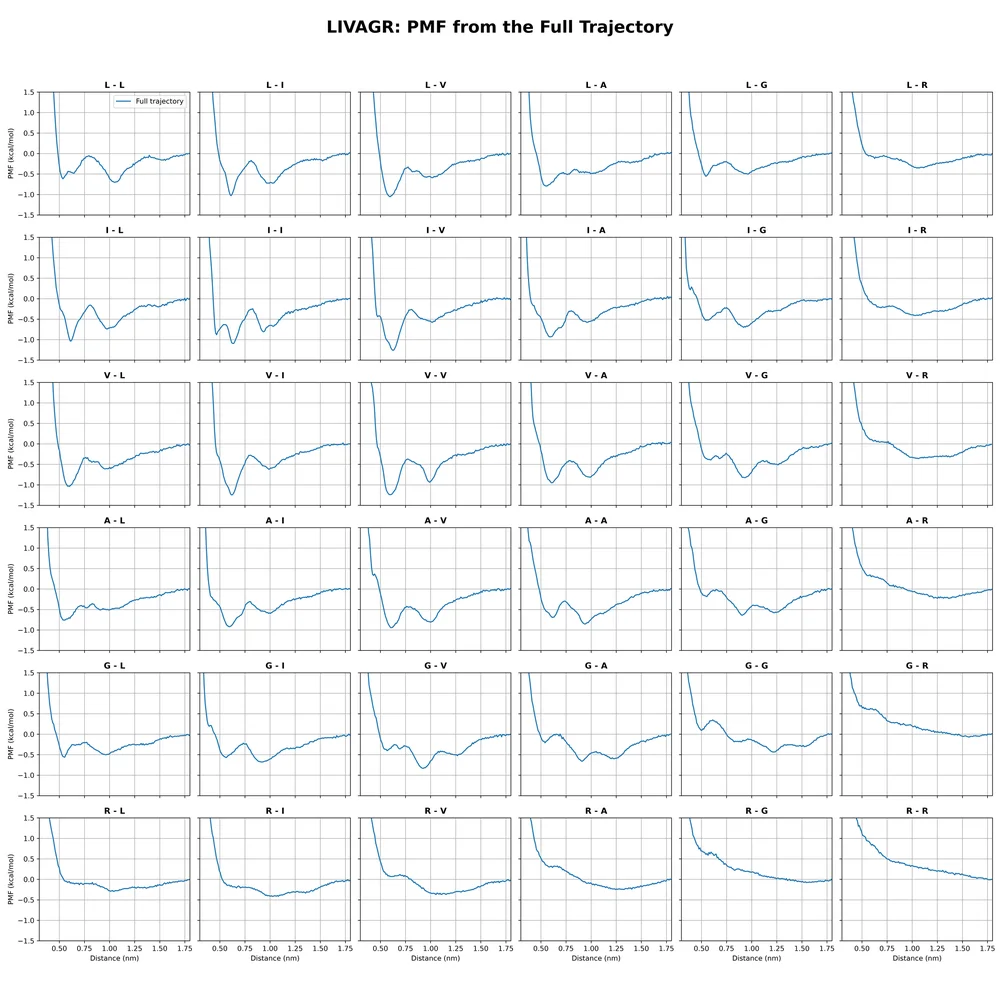
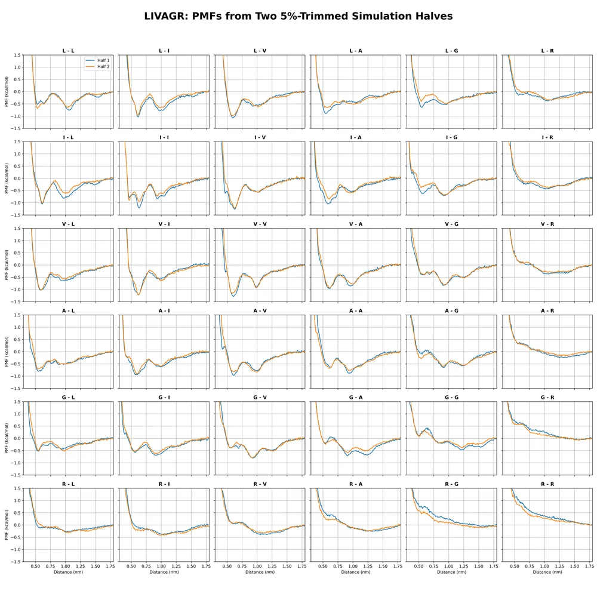
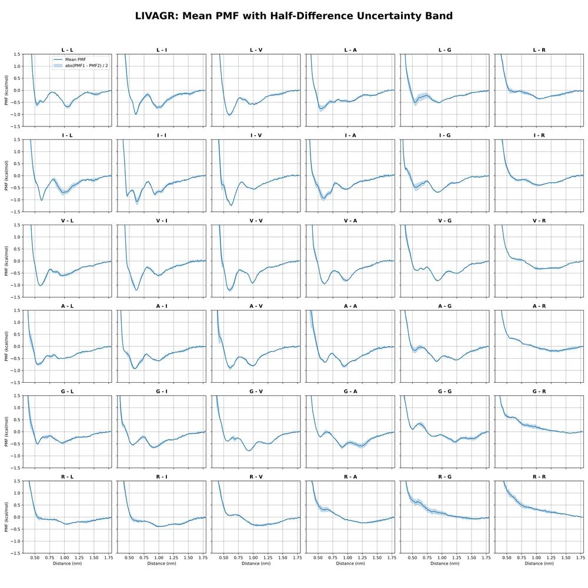
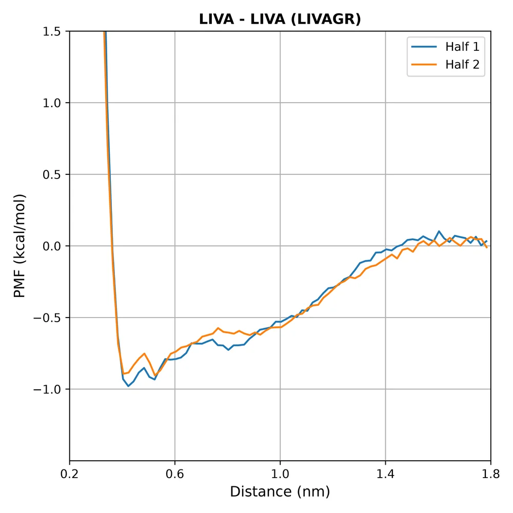
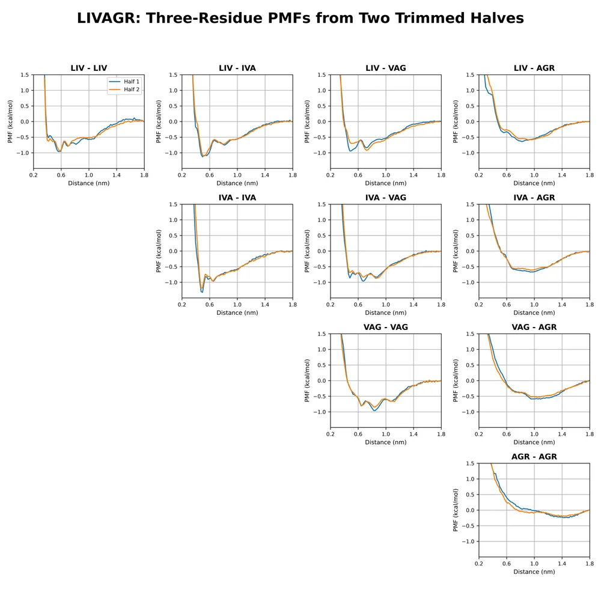
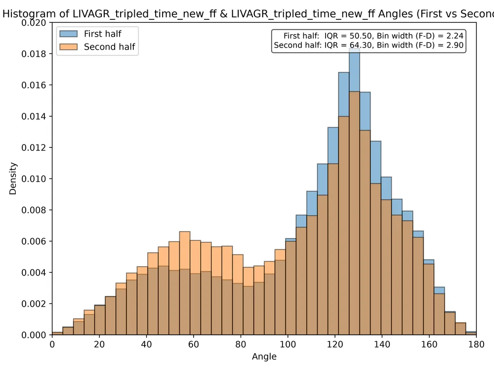
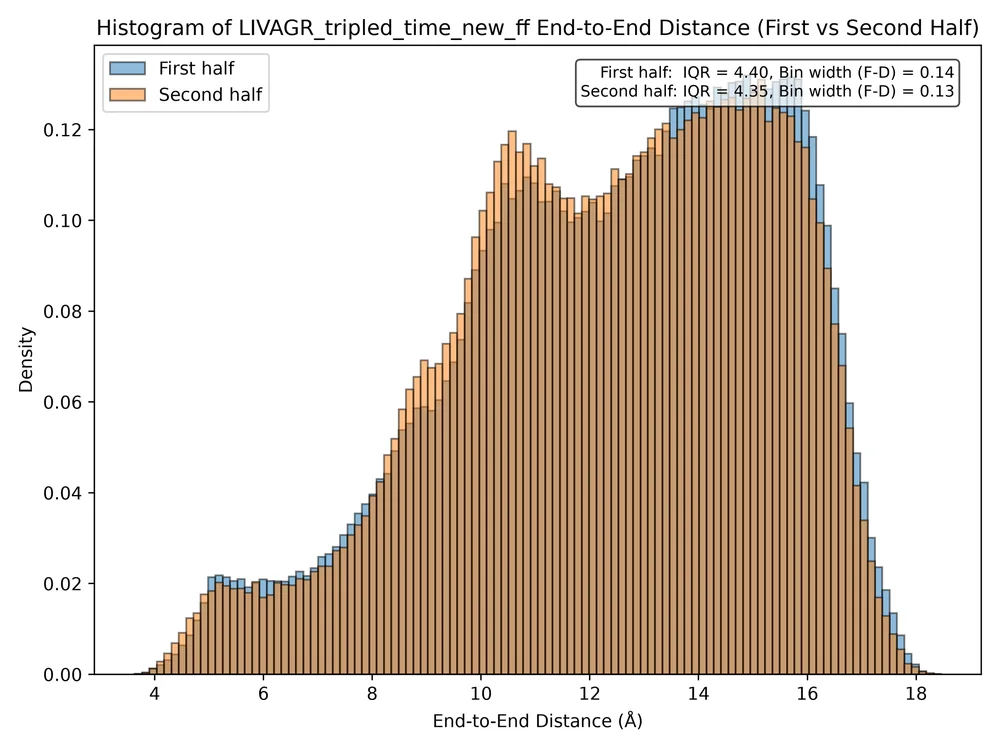
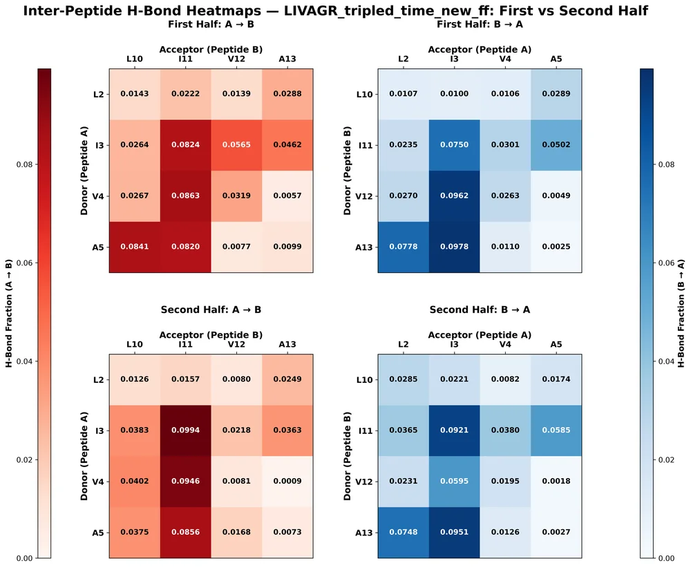
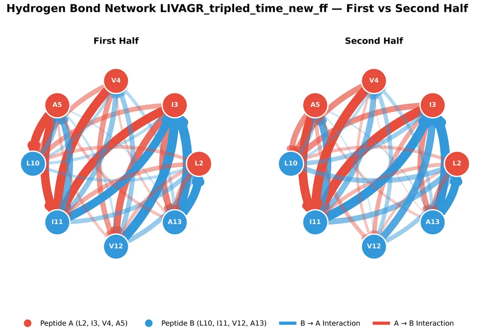

Systems / LIVAGR
LIVAGR
- Residue 6 (Amber)
- ARG
- Charge / protonation
- Arg +1
- Source folder (read-only)
/hopper/ groups/ nerenberglab/ Project-Peptide_Hydrogel/ 1-9/ 60mM_parallel/ livagr/ livagr_tripled_time_new_ff/ analysis_contined - Snapshot
data/livagr/· 136 copied · 4 too large · 6 excluded
Folder name. The source folder is spelled analysis_contined; the snapshot stores it as data/livagr/ like the others.
At a glance
Original PMF plots
From LIVAGR_PMF/plots/, made by pmf_from_cpptraj.py. Click to enlarge; ←/→ flips through this system's plots.


Pair PMFs, full trajectory (6×6)



Pair PMFs, first vs second half (6×6)



Pair PMFs, mean of halves with |PMF₁−PMF₂|/2 band (6×6)



LIVA–LIVA fragment PMF, both halves



Three-residue window PMFs, both halves

Original halved-analysis plots
From halved/, made by combined_first_second_half.py on LIVA–LIVA contact frames (distance < 7 Å) of each half.


Peptide 1 – peptide 2 angle histogram, first vs second half
Caveat: The source cpptraj input defines v1 = :2 → :5 (Leu → Ala of peptide 1) but v2 = :9 → :12 (ACE → Val of peptide 2); the matching vector would be :10 → :13, so this angle is likely off by one residue on peptide 2.



End-to-end distance histogram (peptide 1), first vs second half



Inter-peptide H-bond heatmaps, first vs second half



Inter-peptide H-bond network, first vs second half

Pair well depths
Minimum of each residue-pair PMF (r < 1.8 nm, zero at 1.8 nm) and its distance. Rows = residue on peptide 1, columns = residue on peptide 2. Same colour scale on every system page, so pages can be compared. Hover a cell for the value and, for the mean, ± |PMF1−PMF2|/2 at the minimum.
Mean of halves
| pep 1 ↓pep 2 → | L1 | I2 | V3 | A4 | G5 | R6 |
|---|---|---|---|---|---|---|
| L1 | −0.691.04 nm | −1.000.61 nm | −1.020.60 nm | −0.760.56 nm | −0.510.55 nm | −0.351.06 nm |
| I2 | −1.030.61 nm | −1.080.63 nm | −1.240.63 nm | −0.940.59 nm | −0.700.92 nm | −0.401.02 nm |
| V3 | −1.020.60 nm | −1.220.62 nm | −1.200.60 nm | −0.950.60 nm | −0.820.93 nm | −0.331.07 nm |
| A4 | −0.750.55 nm | −0.920.60 nm | −0.890.61 nm | −0.830.93 nm | −0.620.90 nm | −0.211.37 nm |
| G5 | −0.510.56 nm | −0.660.92 nm | −0.800.92 nm | −0.650.91 nm | −0.421.22 nm | −0.071.56 nm |
| R6 | −0.291.01 nm | −0.401.03 nm | −0.361.05 nm | −0.241.26 nm | −0.081.59 nm | −0.011.76 nm |
Full trajectory
| pep 1 ↓pep 2 → | L1 | I2 | V3 | A4 | G5 | R6 |
|---|---|---|---|---|---|---|
| L1 | −0.701.05 nm | −1.030.61 nm | −1.060.60 nm | −0.790.55 nm | −0.560.54 nm | −0.351.05 nm |
| I2 | −1.030.61 nm | −1.090.64 nm | −1.260.62 nm | −0.930.59 nm | −0.700.92 nm | −0.411.03 nm |
| V3 | −1.040.60 nm | −1.250.62 nm | −1.240.60 nm | −0.950.61 nm | −0.820.93 nm | −0.361.06 nm |
| A4 | −0.760.56 nm | −0.920.60 nm | −0.940.60 nm | −0.850.94 nm | −0.640.91 nm | −0.231.36 nm |
| G5 | −0.560.55 nm | −0.680.91 nm | −0.830.93 nm | −0.660.91 nm | −0.441.21 nm | −0.071.56 nm |
| R6 | −0.291.04 nm | −0.421.02 nm | −0.371.05 nm | −0.251.33 nm | −0.081.55 nm | −0.011.77 nm |
Three-residue windows and LIVA fragment
Mean-of-halves well depth for the ten unordered window pairs (off-diagonal cells pool both orderings). LIVA–LIVA fragment: −0.93 ± 0.05 kcal/mol at 0.42 nm.
| LIV | IVA | VAG | AGR | |
|---|---|---|---|---|
| LIV | −0.950.58 nm | −1.100.52 nm | −0.880.72 nm | −0.590.82 nm |
| IVA | −1.250.50 nm | −0.900.68 nm | −0.640.94 nm | |
| VAG | −0.900.83 nm | −0.561.04 nm | ||
| AGR | −0.221.42 nm |
Top inter-peptide H-bonds
From halved/interhbond_*_half.txt (cpptraj hbond :2-5,10-13 nointramol, residues L, I, V, A only).
Fraction = share of LIVA–LIVA contact frames in which the bond is present. P1 / P2 = peptide; BB = backbone atom, SC = side chain.
First half
| # | Donor | Acceptor | Type | Fraction | Frames | d (Å) | angle (°) |
|---|---|---|---|---|---|---|---|
| 1 | P2 A4 N | P1 I2 O | BB→BB | 9.8% | 8,947 | 2.86 | 160.1 |
| 2 | P2 V3 N | P1 I2 O | BB→BB | 9.6% | 8,797 | 2.87 | 162.9 |
| 3 | P1 V3 N | P2 I2 O | BB→BB | 8.6% | 7,893 | 2.87 | 162.4 |
| 4 | P1 A4 N | P2 L1 O | BB→BB | 8.4% | 7,688 | 2.86 | 160.4 |
| 5 | P1 I2 N | P2 I2 O | BB→BB | 8.2% | 7,537 | 2.87 | 162.2 |
| 6 | P1 A4 N | P2 I2 O | BB→BB | 8.2% | 7,499 | 2.86 | 160.1 |
| 7 | P2 A4 N | P1 L1 O | BB→BB | 7.8% | 7,117 | 2.86 | 160.3 |
| 8 | P2 I2 N | P1 I2 O | BB→BB | 7.5% | 6,857 | 2.86 | 162.3 |
| 9 | P1 I2 N | P2 V3 O | BB→BB | 5.7% | 5,165 | 2.86 | 162.5 |
| 10 | P2 I2 N | P1 A4 O | BB→BB | 5.0% | 4,590 | 2.86 | 160.2 |
32 distinct H-bonds in this half; sum of fractions = 1.21 (≈ mean number of inter-peptide H-bonds per contact frame); contact frames = 91,464.
Second half
| # | Donor | Acceptor | Type | Fraction | Frames | d (Å) | angle (°) |
|---|---|---|---|---|---|---|---|
| 1 | P1 I2 N | P2 I2 O | BB→BB | 9.9% | 8,641 | 2.87 | 162.2 |
| 2 | P2 A4 N | P1 I2 O | BB→BB | 9.5% | 8,263 | 2.86 | 160.2 |
| 3 | P1 V3 N | P2 I2 O | BB→BB | 9.5% | 8,220 | 2.87 | 162.6 |
| 4 | P2 I2 N | P1 I2 O | BB→BB | 9.2% | 8,001 | 2.87 | 162.1 |
| 5 | P1 A4 N | P2 I2 O | BB→BB | 8.6% | 7,441 | 2.86 | 160.0 |
| 6 | P2 A4 N | P1 L1 O | BB→BB | 7.5% | 6,495 | 2.86 | 160.1 |
| 7 | P2 V3 N | P1 I2 O | BB→BB | 5.9% | 5,171 | 2.88 | 161.7 |
| 8 | P2 I2 N | P1 A4 O | BB→BB | 5.9% | 5,086 | 2.86 | 160.7 |
| 9 | P1 V3 N | P2 L1 O | BB→BB | 4.0% | 3,497 | 2.87 | 160.8 |
| 10 | P1 I2 N | P2 L1 O | BB→BB | 3.8% | 3,324 | 2.86 | 161.0 |
32 distinct H-bonds in this half; sum of fractions = 1.14 (≈ mean number of inter-peptide H-bonds per contact frame); contact frames = 86,889.
Raw data folders
| Folder / file | Contents | Files |
|---|---|---|
LIVAGR_PMF/single_residue_pmf_mean_value/ | Pair PMFs, mean of halves + |Δ|/2 (36 CSV) | 36 |
LIVAGR_PMF/single_residue_pmf_halves_value/ | Pair PMFs, half 1 and half 2 (36 CSV) | 36 |
LIVAGR_PMF/single_residue_pmf_full_value/ | Pair PMFs, full trajectory (36 CSV) | 36 |
LIVAGR_PMF/three_residue_pmf_halves_value/ | Three-residue window PMFs, halves (10 CSV) | 10 |
LIVAGR_PMF/fragment_pmf_halves_value/ | LIVA–LIVA fragment PMF, halves (1 CSV) | 1 |
LIVAGR_PMF/plots/ | Original PMF plots (5 PNG) | 5 |
halved/ | Halved analysis: H-bond tables, angle and end-to-end .dat, plots, script | 11 |
pmf_from_cpptraj.py | PMF script used for this system |
Snapshot inventory
Every file in the source analysis folder. copied files are in the snapshot (sha256 prefix shown);
too large (> 20 MB) and excluded (*.in *.prmtop *.log *.nc) files stay only in the source folder.
| Path | Size | Status | sha256 | Source modified |
|---|---|---|---|---|
| LIVAGR_PMF/ | 3.4 KB | copied | 9ce24fdf08 | 2026-10-22 14:18:30 |
| LIVAGR_PMF/ | 2.6 MB | copied | 4c952fa352 | 2026-10-22 14:18:30 |
| LIVAGR_PMF/ | 3.8 MB | copied | 99078d2f81 | 2026-10-22 14:18:20 |
| LIVAGR_PMF/ | 4.4 MB | copied | 2a8383f575 | 2026-10-22 14:18:25 |
| LIVAGR_PMF/ | 263.3 KB | copied | 27255f2b55 | 2026-10-22 14:18:30 |
| LIVAGR_PMF/ | 1.2 MB | copied | b9e8456375 | 2026-10-22 14:18:32 |
| LIVAGR_PMF/ | 3.2 KB | copied | 230264237c | 2026-10-22 14:18:25 |
| LIVAGR_PMF/ | 3.2 KB | copied | 9bc2c67e36 | 2026-10-22 14:18:26 |
| LIVAGR_PMF/ | 3.2 KB | copied | ea7ce55f2c | 2026-10-22 14:18:26 |
| LIVAGR_PMF/ | 3.3 KB | copied | b82a412eaf | 2026-10-22 14:18:26 |
| LIVAGR_PMF/ | 3.3 KB | copied | 627d64b7ef | 2026-10-22 14:18:26 |
| LIVAGR_PMF/ | 3.3 KB | copied | 5c75b6ce2b | 2026-10-22 14:18:26 |
| LIVAGR_PMF/ | 3.2 KB | copied | b3b6abd924 | 2026-10-22 14:18:26 |
| LIVAGR_PMF/ | 3.3 KB | copied | 08adf03c2e | 2026-10-22 14:18:26 |
| LIVAGR_PMF/ | 3.2 KB | copied | 1ee94f86e7 | 2026-10-22 14:18:26 |
| LIVAGR_PMF/ | 3.3 KB | copied | 836894bbdb | 2026-10-22 14:18:26 |
| LIVAGR_PMF/ | 3.4 KB | copied | 727a26e68e | 2026-10-22 14:18:26 |
| LIVAGR_PMF/ | 3.3 KB | copied | 9f8b22f8aa | 2026-10-22 14:18:26 |
| LIVAGR_PMF/ | 3.2 KB | copied | c69e0dd9ab | 2026-10-22 14:18:26 |
| LIVAGR_PMF/ | 3.2 KB | copied | 7877de8f4f | 2026-10-22 14:18:26 |
| LIVAGR_PMF/ | 3.3 KB | copied | 7ee03c61ba | 2026-10-22 14:18:26 |
| LIVAGR_PMF/ | 3.2 KB | copied | 7a8e80d967 | 2026-10-22 14:18:26 |
| LIVAGR_PMF/ | 3.3 KB | copied | 3a14a303a9 | 2026-10-22 14:18:26 |
| LIVAGR_PMF/ | 3.3 KB | copied | b285a1b505 | 2026-10-22 14:18:26 |
| LIVAGR_PMF/ | 3.3 KB | copied | 3a1f2f1e77 | 2026-10-22 14:18:26 |
| LIVAGR_PMF/ | 3.3 KB | copied | dcc7461c5b | 2026-10-22 14:18:26 |
| LIVAGR_PMF/ | 3.3 KB | copied | ca5ef0f062 | 2026-10-22 14:18:26 |
| LIVAGR_PMF/ | 3.0 KB | copied | a808a106a9 | 2026-10-22 14:18:26 |
| LIVAGR_PMF/ | 3.4 KB | copied | 7b00f86787 | 2026-10-22 14:18:26 |
| LIVAGR_PMF/ | 3.3 KB | copied | 26812e14a5 | 2026-10-22 14:18:26 |
| LIVAGR_PMF/ | 3.3 KB | copied | e7ea8d64a2 | 2026-10-22 14:18:26 |
| LIVAGR_PMF/ | 3.4 KB | copied | 18b2328daa | 2026-10-22 14:18:26 |
| LIVAGR_PMF/ | 3.3 KB | copied | 1faed59639 | 2026-10-22 14:18:26 |
| LIVAGR_PMF/ | 3.2 KB | copied | 92ed7061c0 | 2026-10-22 14:18:26 |
| LIVAGR_PMF/ | 3.2 KB | copied | a4038d10e3 | 2026-10-22 14:18:26 |
| LIVAGR_PMF/ | 3.3 KB | copied | c5ccc06287 | 2026-10-22 14:18:26 |
| LIVAGR_PMF/ | 3.3 KB | copied | ae9d744a49 | 2026-10-22 14:18:26 |
| LIVAGR_PMF/ | 3.3 KB | copied | 80e041a06f | 2026-10-22 14:18:26 |
| LIVAGR_PMF/ | 3.3 KB | copied | ff6de36289 | 2026-10-22 14:18:26 |
| LIVAGR_PMF/ | 3.3 KB | copied | 82186f75a6 | 2026-10-22 14:18:26 |
| LIVAGR_PMF/ | 3.3 KB | copied | a0259c470e | 2026-10-22 14:18:26 |
| LIVAGR_PMF/ | 3.3 KB | copied | 4efca5b036 | 2026-10-22 14:18:26 |
| LIVAGR_PMF/ | 6.4 KB | copied | 038ceb793a | 2026-10-22 14:18:16 |
| LIVAGR_PMF/ | 6.5 KB | copied | 579a4aa0b6 | 2026-10-22 14:18:16 |
| LIVAGR_PMF/ | 6.4 KB | copied | 54a51dacc0 | 2026-10-22 14:18:16 |
| LIVAGR_PMF/ | 6.5 KB | copied | 886ded9e18 | 2026-10-22 14:18:16 |
| LIVAGR_PMF/ | 6.6 KB | copied | a92475cc23 | 2026-10-22 14:18:16 |
| LIVAGR_PMF/ | 6.6 KB | copied | 4f661878f4 | 2026-10-22 14:18:16 |
| LIVAGR_PMF/ | 6.4 KB | copied | 4df45b046e | 2026-10-22 14:18:16 |
| LIVAGR_PMF/ | 6.5 KB | copied | d3b882a190 | 2026-10-22 14:18:16 |
| LIVAGR_PMF/ | 6.5 KB | copied | bffc428466 | 2026-10-22 14:18:16 |
| LIVAGR_PMF/ | 6.6 KB | copied | 9e1faf49cc | 2026-10-22 14:18:16 |
| LIVAGR_PMF/ | 6.8 KB | copied | 91d3015c39 | 2026-10-22 14:18:16 |
| LIVAGR_PMF/ | 6.6 KB | copied | 19341c5410 | 2026-10-22 14:18:16 |
| LIVAGR_PMF/ | 6.4 KB | copied | 14ddb774ba | 2026-10-22 14:18:16 |
| LIVAGR_PMF/ | 6.5 KB | copied | 532f71bacd | 2026-10-22 14:18:16 |
| LIVAGR_PMF/ | 6.5 KB | copied | 2b68b8f961 | 2026-10-22 14:18:16 |
| LIVAGR_PMF/ | 6.5 KB | copied | b4c9dd7c44 | 2026-10-22 14:18:16 |
| LIVAGR_PMF/ | 6.6 KB | copied | d445aa6fa6 | 2026-10-22 14:18:16 |
| LIVAGR_PMF/ | 6.6 KB | copied | 505b3e69b4 | 2026-10-22 14:18:16 |
| LIVAGR_PMF/ | 6.6 KB | copied | 4990b66e59 | 2026-10-22 14:18:16 |
| LIVAGR_PMF/ | 6.7 KB | copied | 70cd80875d | 2026-10-22 14:18:16 |
| LIVAGR_PMF/ | 6.6 KB | copied | 5640267eea | 2026-10-22 14:18:16 |
| LIVAGR_PMF/ | 6.4 KB | copied | 47a811582a | 2026-10-22 14:18:16 |
| LIVAGR_PMF/ | 6.7 KB | copied | 612b9d6686 | 2026-10-22 14:18:16 |
| LIVAGR_PMF/ | 6.7 KB | copied | e4d128667c | 2026-10-22 14:18:16 |
| LIVAGR_PMF/ | 6.6 KB | copied | b53f9e666c | 2026-10-22 14:18:16 |
| LIVAGR_PMF/ | 6.7 KB | copied | 084c0f9f89 | 2026-10-22 14:18:16 |
| LIVAGR_PMF/ | 6.6 KB | copied | 6fa17964f2 | 2026-10-22 14:18:17 |
| LIVAGR_PMF/ | 6.5 KB | copied | eb4736a9dd | 2026-10-22 14:18:17 |
| LIVAGR_PMF/ | 6.6 KB | copied | 5f3d41ffa5 | 2026-10-22 14:18:17 |
| LIVAGR_PMF/ | 6.7 KB | copied | 9b86979e95 | 2026-10-22 14:18:17 |
| LIVAGR_PMF/ | 6.7 KB | copied | 15bacf9893 | 2026-10-22 14:18:17 |
| LIVAGR_PMF/ | 6.6 KB | copied | 0fa5c7f7cc | 2026-10-22 14:18:17 |
| LIVAGR_PMF/ | 6.6 KB | copied | 76a4f36068 | 2026-10-22 14:18:17 |
| LIVAGR_PMF/ | 6.7 KB | copied | 44fde6de73 | 2026-10-22 14:18:17 |
| LIVAGR_PMF/ | 6.7 KB | copied | d9edbbbd65 | 2026-10-22 14:18:17 |
| LIVAGR_PMF/ | 6.4 KB | copied | b5aff435f1 | 2026-10-22 14:18:17 |
| LIVAGR_PMF/ | 11.6 KB | copied | d73a140c06 | 2026-10-22 14:18:21 |
| LIVAGR_PMF/ | 11.6 KB | copied | 7e2919609c | 2026-10-22 14:18:21 |
| LIVAGR_PMF/ | 11.6 KB | copied | 408852872c | 2026-10-22 14:18:21 |
| LIVAGR_PMF/ | 11.8 KB | copied | 02afdcfa5a | 2026-10-22 14:18:21 |
| LIVAGR_PMF/ | 11.9 KB | copied | fea8a57de8 | 2026-10-22 14:18:21 |
| LIVAGR_PMF/ | 12.0 KB | copied | 982e033a06 | 2026-10-22 14:18:21 |
| LIVAGR_PMF/ | 11.6 KB | copied | 136513aecd | 2026-10-22 14:18:21 |
| LIVAGR_PMF/ | 11.8 KB | copied | b2619fd8ba | 2026-10-22 14:18:21 |
| LIVAGR_PMF/ | 11.7 KB | copied | e62be12e3a | 2026-10-22 14:18:21 |
| LIVAGR_PMF/ | 11.9 KB | copied | f1c92f41f7 | 2026-10-22 14:18:21 |
| LIVAGR_PMF/ | 12.2 KB | copied | db55a339f7 | 2026-10-22 14:18:21 |
| LIVAGR_PMF/ | 11.9 KB | copied | 9d648d626d | 2026-10-22 14:18:21 |
| LIVAGR_PMF/ | 11.6 KB | copied | a8c5c3a119 | 2026-10-22 14:18:21 |
| LIVAGR_PMF/ | 11.7 KB | copied | 4da4fa8fda | 2026-10-22 14:18:21 |
| LIVAGR_PMF/ | 11.7 KB | copied | 4e6817ca04 | 2026-10-22 14:18:21 |
| LIVAGR_PMF/ | 11.8 KB | copied | 9edcd1f532 | 2026-10-22 14:18:21 |
| LIVAGR_PMF/ | 12.0 KB | copied | 066003830c | 2026-10-22 14:18:21 |
| LIVAGR_PMF/ | 11.9 KB | copied | 16a46a7eec | 2026-10-22 14:18:21 |
| LIVAGR_PMF/ | 11.9 KB | copied | 6b1dfaff11 | 2026-10-22 14:18:21 |
| LIVAGR_PMF/ | 12.0 KB | copied | 6975585333 | 2026-10-22 14:18:21 |
| LIVAGR_PMF/ | 11.8 KB | copied | 8f488f6fe1 | 2026-10-22 14:18:21 |
| LIVAGR_PMF/ | 11.7 KB | copied | 84f6b1f337 | 2026-10-22 14:18:21 |
| LIVAGR_PMF/ | 12.1 KB | copied | 898dc7af52 | 2026-10-22 14:18:21 |
| LIVAGR_PMF/ | 12.0 KB | copied | 696cb44baa | 2026-10-22 14:18:21 |
| LIVAGR_PMF/ | 12.0 KB | copied | 65e4d78213 | 2026-10-22 14:18:21 |
| LIVAGR_PMF/ | 12.1 KB | copied | 8d9618372b | 2026-10-22 14:18:21 |
| LIVAGR_PMF/ | 12.0 KB | copied | 6cb6170935 | 2026-10-22 14:18:21 |
| LIVAGR_PMF/ | 11.9 KB | copied | 2c23bbfd8e | 2026-10-22 14:18:21 |
| LIVAGR_PMF/ | 12.0 KB | copied | 18a91b722f | 2026-10-22 14:18:21 |
| LIVAGR_PMF/ | 12.1 KB | copied | 3be9e7217e | 2026-10-22 14:18:21 |
| LIVAGR_PMF/ | 12.0 KB | copied | 0bee75abc9 | 2026-10-22 14:18:21 |
| LIVAGR_PMF/ | 11.9 KB | copied | b58233c31c | 2026-10-22 14:18:21 |
| LIVAGR_PMF/ | 11.9 KB | copied | 8e32b9b6b5 | 2026-10-22 14:18:22 |
| LIVAGR_PMF/ | 12.0 KB | copied | dc3a394ae9 | 2026-10-22 14:18:22 |
| LIVAGR_PMF/ | 12.1 KB | copied | 112d474e28 | 2026-10-22 14:18:22 |
| LIVAGR_PMF/ | 11.6 KB | copied | 42821b2eae | 2026-10-22 14:18:22 |
| LIVAGR_PMF/ | 3.8 KB | copied | 44e9ea50b1 | 2026-10-22 14:18:31 |
| LIVAGR_PMF/ | 3.6 KB | copied | 9601426ee8 | 2026-10-22 14:18:31 |
| LIVAGR_PMF/ | 3.3 KB | copied | 4b5a1fbc5f | 2026-10-22 14:18:31 |
| LIVAGR_PMF/ | 3.5 KB | copied | 0cfeb9f4a9 | 2026-10-22 14:18:31 |
| LIVAGR_PMF/ | 3.6 KB | copied | 05e72ae2a9 | 2026-10-22 14:18:31 |
| LIVAGR_PMF/ | 3.4 KB | copied | 7b8420160d | 2026-10-22 14:18:30 |
| LIVAGR_PMF/ | 3.4 KB | copied | 0a867370e0 | 2026-10-22 14:18:30 |
| LIVAGR_PMF/ | 3.5 KB | copied | 314fb92f59 | 2026-10-22 14:18:31 |
| LIVAGR_PMF/ | 3.6 KB | copied | 8925e450f1 | 2026-10-22 14:18:31 |
| LIVAGR_PMF/ | 3.5 KB | copied | 2cd773c507 | 2026-10-22 14:18:31 |
| com_frames_nowater.dcd original: / | 1.4 GB | too large | – | 2026-10-22 14:16:45 |
| dcd.in original: / | 179 B | excluded | – | 2026-10-22 14:16:14 |
| halved/ | 183.4 KB | copied | 086685675e | 2026-10-22 14:19:52 |
| halved/ | 183.4 KB | copied | 2f79ef666c | 2026-10-22 14:19:52 |
| halved/ | 15.2 KB | copied | 1871c595d6 | 2026-10-22 14:12:41 |
| halved/ | 5.7 MB | copied | c70998b444 | 2026-10-22 14:19:22 |
| halved/ | 5.7 MB | copied | 9233e3703a | 2026-10-22 14:19:38 |
| halved/ original: / | 222.3 MB | excluded | – | 2026-10-22 14:19:20 |
| halved/ original: / | 211.1 MB | excluded | – | 2026-10-22 14:19:35 |
| halved/ | 982.3 KB | copied | 9e75d78836 | 2026-10-22 14:19:51 |
| halved/ original: / | 1.8 KB | excluded | – | 2026-10-22 14:18:57 |
| halved/ | 1.8 MB | copied | 57ab5bb31b | 2026-10-22 14:19:50 |
| halved/ | 2.8 KB | copied | c6479197fe | 2026-10-22 14:19:21 |
| halved/ | 2.8 KB | copied | 7120fe62f8 | 2026-10-22 14:19:36 |
| halved/ original: / | 28.0 MB | too large | – | 2026-10-22 14:19:21 |
| halved/ original: / | 26.6 MB | too large | – | 2026-10-22 14:19:36 |
| halved/ | 1.9 MB | copied | db8bced797 | 2026-10-22 14:19:21 |
| halved/ | 1.8 MB | copied | 4fd422f966 | 2026-10-22 14:19:37 |
| livagr_nowater.prmtop original: / | 92.8 KB | excluded | – | 2026-10-22 14:16:45 |
| pmf_distances.dat original: / | 399.4 MB | too large | – | 2026-10-22 14:18:09 |
| pmf_distances.in original: / | 5.8 KB | excluded | – | 2026-10-22 14:12:41 |
| pmf_from_cpptraj.py | 26.7 KB | copied | 6181dc6403 | 2026-10-22 14:12:39 |